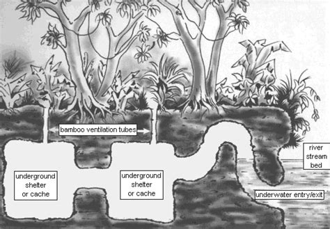

Facing the most powerful nation in the world, North Vietnamese communists wisely chose to wage a war of attrition. They planned to make a long, bloody, and expensive war for the U.S. This strategy’s purpose was to turn American public opinion against American involvement in the conflict, and therefore, forced them to leave Indochina so that the North Vietnamese Army (NVA) could conduct major offensives against the Army of the Republic of Vietnam (ARVN) and unify the country under a communist government.
Ho Chi Minh Trail

Tunnel System for Guerilla Warfare